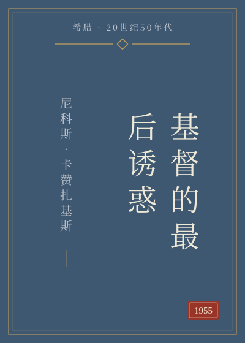
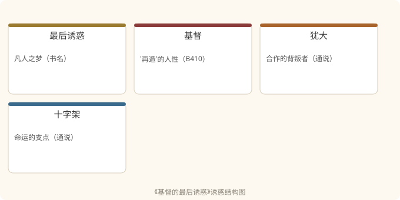

基督的最后诱惑
一、基本信息
| 作者 | 尼科斯·卡赞扎基斯 |
|---|---|
| 成书/出版 | 1955年（Britannica B410：The Last Temptation of Christ (1955)——'a revisionist psychological study of Jesus Christ'） Nikos Kazantzakis — Encyclopaedia Britannica（百科全书） |
| 国别/地区 | 希腊 |
| 时代 | 近代 · 20世纪50年代 |
| 体裁 | 长篇小说 |
| 语言 | 希腊语 |

《基督的最后诱惑》诱惑结构图（主题·结构图）
二、创作背景
Britannica（B410）：'a revisionist psychological study of Jesus Christ'（基督的修正主义心理研究）。
Britannica（B410）：卡赞扎基斯——'a major contribution to modern Greek literature'；1988年电影改编（B410）。
题材（通说待核）：'最后诱惑'：十字架上的幻梦——做凡人的可能。
三、内容脉络
（通说待核）基督的'人性'挣扎与犹大的'合作'。
（通说待核）'最后诱惑'：家庭生活的幻梦。
四、主要人物表
| 人物 | 身份 | 说明 |
|---|---|---|
| 基督 | '再造'的主角 | （B410：revisionist study） |
| 犹大 | 背叛者/合作者 | （通说待核） |
五、主题与艺术特点
- '修正主义心理研究'（B410：revisionist psychological study）。
- '最后的诱惑'：凡人之梦（书名语境——通说待核）。
- 教会与文学的争议（通说待核）。
六、影响与评论
- Britannica：'a revisionist psychological study of Jesus Christ'（B410）。
Nikos Kazantzakis — Encyclopaedia Britannica（百科全书） - Britannica：1988年电影改编（B410）。
Nikos Kazantzakis — Encyclopaedia Britannica（百科全书）
七、阅读建议
难点
- 福音的'再造'叙事。
- 教会争议史（通说待核）。
- 《基督的最后诱惑》中译本（人民文学等——通说待核）。
- 希腊文原版。
卡赞扎基斯进阶；先读《希腊人左巴》。
八、待核实
- '十字架上幻梦'细节核对（通说）。
- 1955年出版细节待核。
- '列禁书'说待核（通说）。